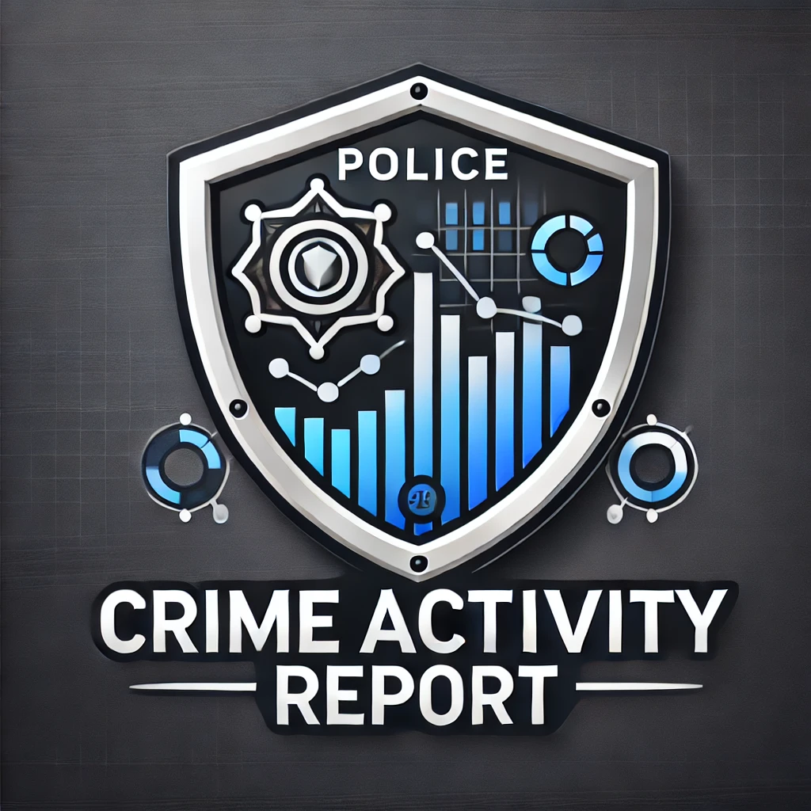

Home
Reports
Power BI Reports
Graph Generator
Crime Predictor
Emergency
Emergency Contacts & FAQs
üìû Dial 911
üöì Contact Local Police
üìã Report an Incident
Frequently Asked Questions
❓ When should I call 911?
+
Call 911 for life-threatening emergencies, crimes in progress, or when urgent medical attention is needed.
❓ How can I report a crime anonymously?
+
You can report a crime anonymously by contacting Crime Stoppers or using our Report an Incident feature.
❓ What should I do if I witness a crime?
+
Stay safe, call 911 if needed, and provide accurate details to law enforcement.